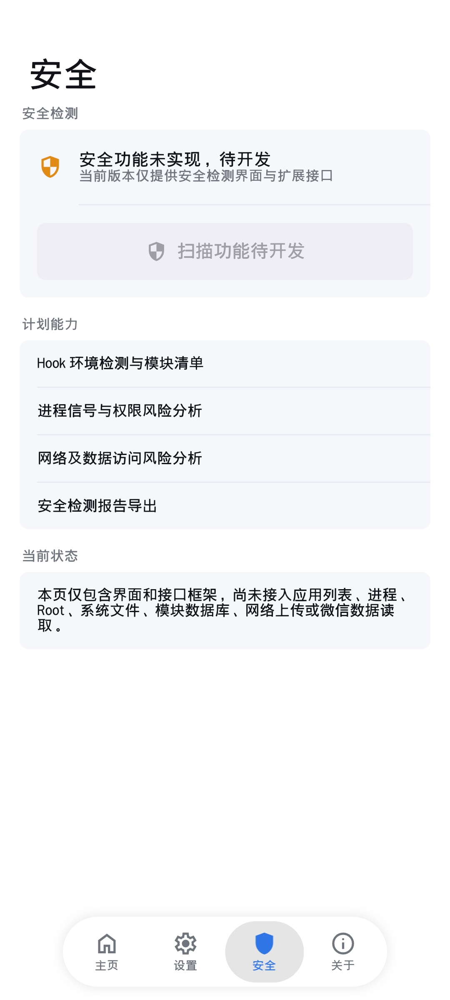

安装并启用
从 v1.5.11 Release 下载 APK。进入 LSPosed 启用 Wtonec，按需勾选微信 com.tencent.mm、QQ com.tencent.mobileqq。
v1.5.11 · Android · LSPosed · WeChat / QQ
把文字，变成可以发送到微信或 QQ 会话的语音。
一个 APK 覆盖微信模块与 QQ 模块，把 Fish Audio、系统 TTS、在线目录、本地语音包和 Tencent SILK 处理集中在同一套聊天面板中。
QUICK START / 01
从安装到发送第一条语音，按下面顺序完成一次即可。Fish Audio 与轻颜需要自己的 Tiax API Key；系统 TTS 和本地语音包无需 Key。
从 v1.5.11 Release 下载 APK。进入 LSPosed 启用 Wtonec，按需勾选微信 com.tencent.mm、QQ com.tencent.mobileqq。
完整结束目标宿主后重新打开。微信与 QQ 分别完成自己的 DEX 匹配，成功后再重启对应宿主，后续直接读取独立缓存。
微信可长按语音按钮或点击悬浮球；QQ NT 使用聊天页悬浮球或已适配的语音入口，打开同一套“预设 / 克隆 / 语音包 / 设置”面板。
Fish Audio 或轻颜用户在“设置”中保存自己的 Key；系统 TTS 和本地语音包可以直接使用。
输入文字并点击“试听”或“生成并发送”。发送前确认面板顶部显示正确的宿主、账号和目标会话。
CORE CAPABILITIES / 02
从输入文字到当前会话，Wtonec 共享选音色、生成、试听、缓存与格式转换，并由微信或 QQ Host Adapter 完成最终发送。
搜索、收藏和快速切换 Fish Audio 或轻颜音色，也可管理 Fish Audio 克隆音色 ID。
使用 Android 当前默认语音引擎，支持语速与音调调节，不依赖音色列表或 API Key。
导入、搜索、排序、试听、重命名和发送，让常用音频成为随取随用的素材库。
接口返回音频后在本地完成解码、24 kHz 重采样与 Tencent SILK 编码，再进入微信或 QQ 的语音发送链。
INTERACTIVE PREVIEW / 03
切换生成模式，输入一段文字，查看音频处理过程的界面反馈。
REAL INTERFACE / 04
主页、设置、安全与关于页来自既有 Wtonec 实机截图；当前没有把微信截图标记成 QQ 实机证据，QQ v1.5.11 运行结果以装机验证为准。
运行状态
AUDIO PIPELINE / 05
LOCAL DATA / 06
语音包、音色元数据、DEX 缓存和日志均按明确目录组织。Android 11+ 会限制普通文件管理器访问 Android/data，日常维护优先使用应用内导入、导出和清理入口。
微信与 QQ 保留独立宿主副本，模块通过受控 Bridge 维护共享 Key 和 canonical 语音库。跨设备迁移前先导出 MP3 和自定义音色。
查看存储说明/storage/emulated/0/Android/data/com.tencent.mm/Wtonec/
/storage/emulated/0/Android/data/com.tencent.mobileqq/Wtonec/

SECURITY FRAMEWORK / 07
安全页可读取设备当前可见的微信/QQ 作用域、模块包、进程与配置证据，并在本地生成报告。结果受系统权限、Root 状态和 LSPosed 可见性影响。
WTONEC / ANDROID VOICE STUDIO
查看项目仓库与更新记录，或从文档入口继续了解安装、配置、数据目录和音频处理细节。